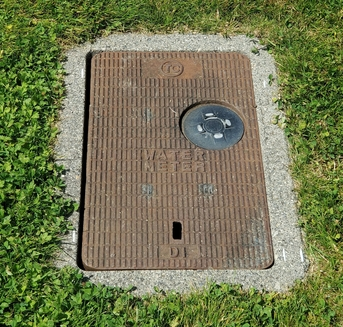

1. Enter your home address or account number.
2. A map and photo will show your water meter location. The meter is under the orange traffic cone.
The meter looks similar to this example:

If the meter is not found with this tool, contact the City of Surrey at 604-591-4152 for assistance.